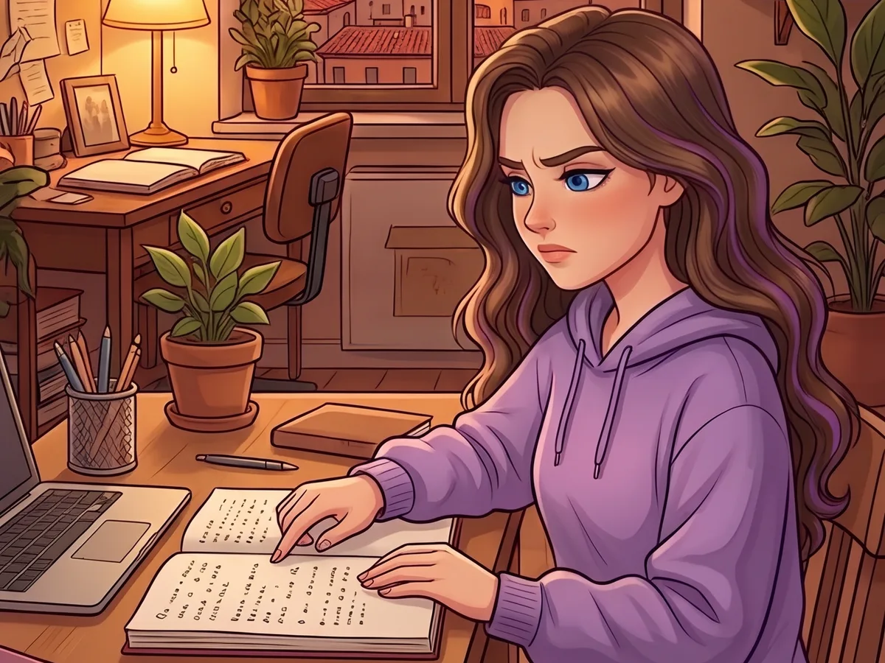
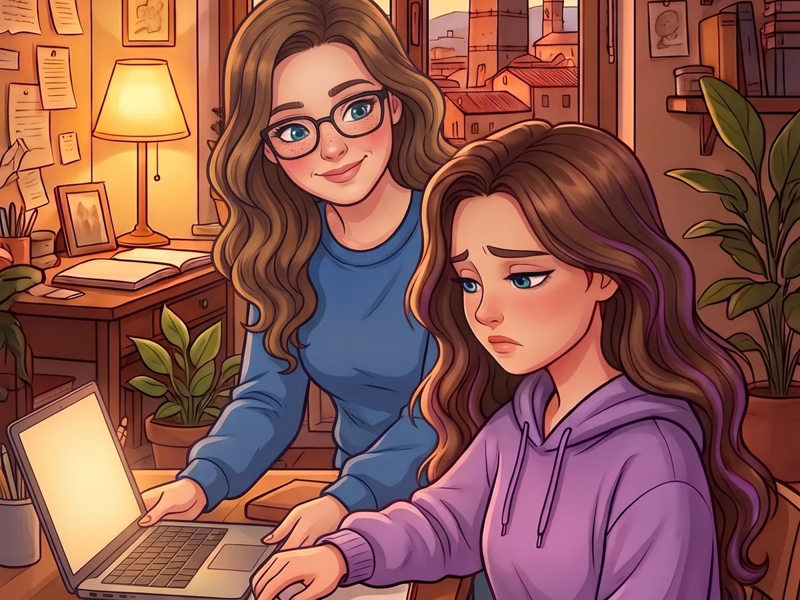
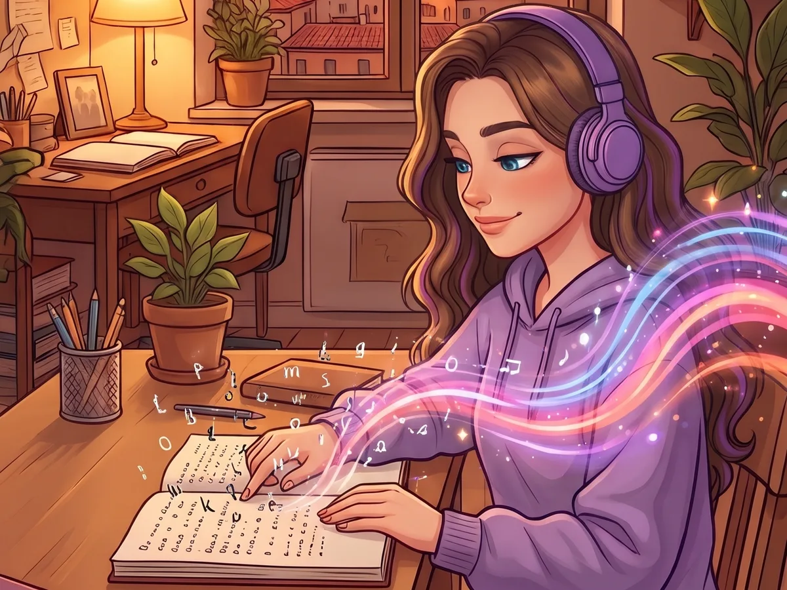

Ci sono pagine dove le parole stanno ferme e composte, come bambini in fila il primo giorno di scuola. E poi ci sono pagine dove fanno le ballerine.
La "b" fa una piroetta e diventa "d". Una sillaba salta la fila. La riga di sotto sale a curiosare in quella di sopra. E tu sei lì, col dito sul foglio, che provi a tenerle ferme tutte quante mentre il senso della frase è già uscito dalla porta sul retro.
Per tante persone dislessiche leggere è questa cosa qui. Da fuori si vede uno che legge piano. Da dentro è come fare l'appello a una classe che non sta seduta.
E dopo dieci righe sei stanco come dopo dieci pagine. Solo che nessuno ti dice bravo: di solito ti dicono "leggi meglio".

Il trucco che avete già in tasca
Si chiama sintesi vocale, che è un nome bruttino per una cosa bellissima: il computer legge al posto vostro. Voi mettete le cuffie e la pagina diventa voce.
Le ballerine possono continuare a ballare quanto vogliono. Voi intanto ascoltate.

La cosa buffa è che ce l'avete già. Sta dentro il computer, il tablet e il telefono da anni, nascosta in fondo alle impostazioni come il libretto di istruzioni della lavatrice: c'è sempre stato, nessuno l'ha mai aperto.
"Eh, ma così è troppo comodo"
Questa la sento spesso, e ci tengo a rispondere.
A chi porta gli occhiali nessuno ha mai detto che sta barando. Nessuno gli chiede di toglierli per "allenare l'occhio". Gli occhiali non leggono al posto suo: gli fanno arrivare la pagina.
La sintesi vocale fa lo stesso mestiere, passando dalle orecchie. Il testo è quello, parola per parola. La testa che lo capisce è sempre la vostra, o quella di vostro figlio. Cambia solo la strada per arrivarci, e una strada in piano al posto di una ferrata in verticale non ha mai reso nessuno più pigro. Ha solo fatto arrivare in cima più gente.
Dove si nasconde
Io di informatica ne capisco quanto basta per non fare danni, quindi ve la faccio semplice.
Sul computer con Windows. Aprite la pagina con Microsoft Edge e premete il tasto F9. Si apre il Lettore immersivo, che vi pulisce la pagina da tutto quello che distrae. Lì dentro c'è il pulsante "Lettura ad alta voce". Lo premete e parte.
Su iPhone e iPad. Impostazioni, poi Accessibilità, poi "Contenuto parlato".
Sui telefoni Android. Impostazioni, poi Accessibilità, poi "Seleziona per ascoltare".
I nomi ogni tanto cambiano, perché a chi fa i telefoni piace spostare i mobili. Se non trovate la voce giusta, scrivete "sintesi vocale" nella ricerca delle impostazioni e salta fuori.
Due o tre cose che fanno la differenza
Scegliete la voce. Ce ne sono diverse, e alcune sembrano l'annuncio dei treni in ritardo. Provatele finché ne trovate una con cui passereste volentieri mezz'ora.
Regolate la velocità. Di solito parte troppo svelta, come una che ha lasciato il sugo sul fuoco. Si rallenta, e più avanti, quando l'orecchio si è abituato, si può riaccelerare.
Provate ad ascoltare seguendo il testo con gli occhi. Molti strumenti evidenziano la parola mentre la pronunciano: l'occhio va dietro alla voce, e le ballerine, con qualcuno che tiene il tempo, si danno una calmata.
E cominciate dalle cose lunghe: il capitolo di storia, la consegna che non finisce più, la circolare della scuola. Sì, anche quella. Funziona pure per i grandi.

Qui sul blog
Sul blog non dovete cercare niente nelle impostazioni. Dove trovate l'altoparlante in alto, lo premete e l'articolo ve lo leggo io, con la mia voce. Il pulsante vi segue mentre scorrete, così potete fermarmi quando suona il citofono e riprendermi dopo.
Provatela stasera, con una pagina qualunque. Poi scrivetemi com'è andata.